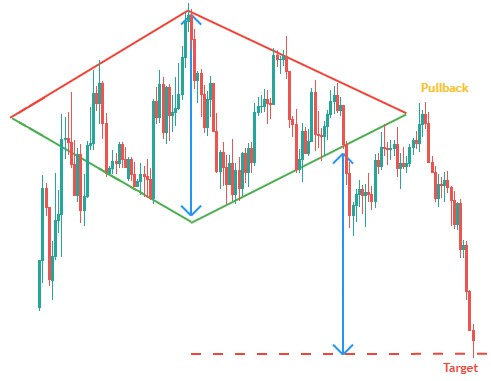
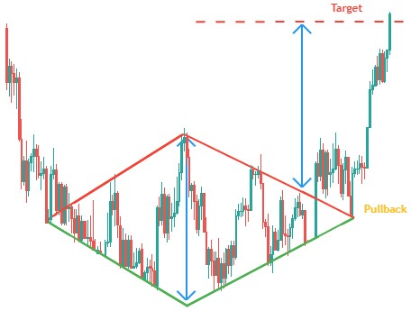

- Figures chartistes : Le Diamant -
Le diamant est une figure chartiste de retournement de tendance.Il est formée par deux triangles symétriques juxtaposés, formant donc un losange.
Cette figure marque l'essoufflement du courant et l'indécision des investisseurs.
L'objectif de cours d'un diamant se calcule en reportant la hauteur du diamant au point de sortie.
En général, le mouvement de sortie est aussi rapide que le mouvement qui a précédé la figure.
Diamant de Sommet

Diamant de Creux

80% la sortie d'un diamant de sommet est baissière.
95% l'objectif de cours est atteint.
59% le cours effectue un pullback en résistance sur la ligne de support.
82% la sortie d'un diamant de creux est haussière.
79% l'objectif de cours est atteint.
43% le cours effectue un pullback en support sur la ligne de résistance.
- Les diamants de sommet apparaissent 3 fois plus souvent que les diamants de creux.
- Il arrive de temps en temps que le cours forme une tête et épaules inversé au sein du diamant de creux.
- La figure en diamant de creux est très difficilement repérable, et souvent oublié par les traders.
- La première moitié d'un diamant de creux est une figure d'élargissement symétrique (figure de continuation) alors que le diamant de creux (ensemble des 2 moitiés) est une figure de retournement.